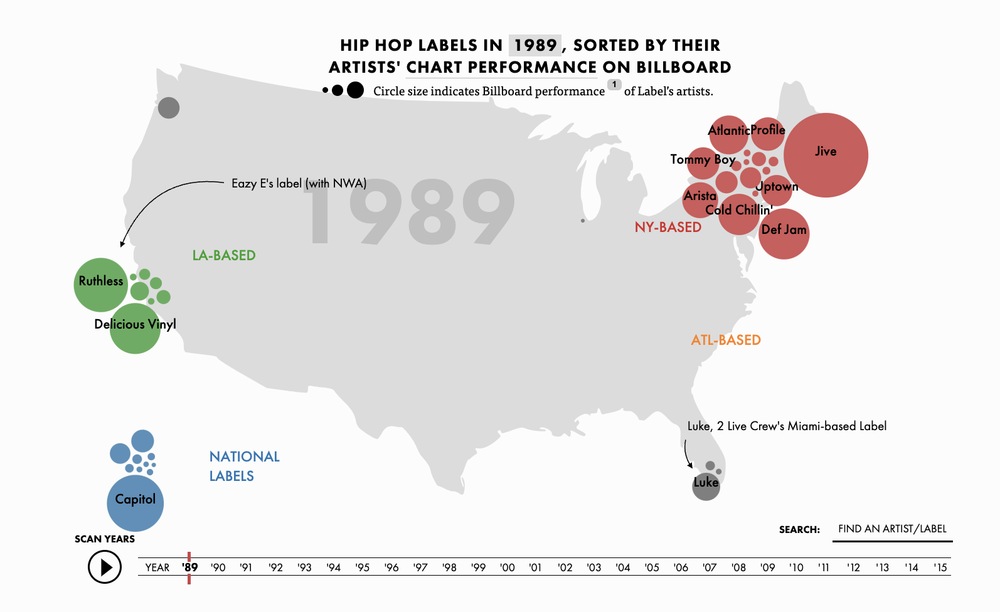

Let's look at just 1989, the luanch of Billboard's "Hot Rap Singles" chart:
In 1989, regional independent labels dominated with superstar signings. Young MC and the Phacyde are signed to Delicious Vinyl. Biz Markie (Just a Friend), Big Daddy Kane (Smooth Operator), and Marley Marl are all on Cold Chillin', Ruthless, Eazy E's label, has N.W.A, and the D.O.C. on its roster. Jive is crushing it with a rsoter that includes Boogie Down Production, DJ Jazzy Jeff and the Fresh Prince, and Too $hort. And Trommy Boy presciently both De La Soul and Queen Latifah's first albums.
BACK NEXT